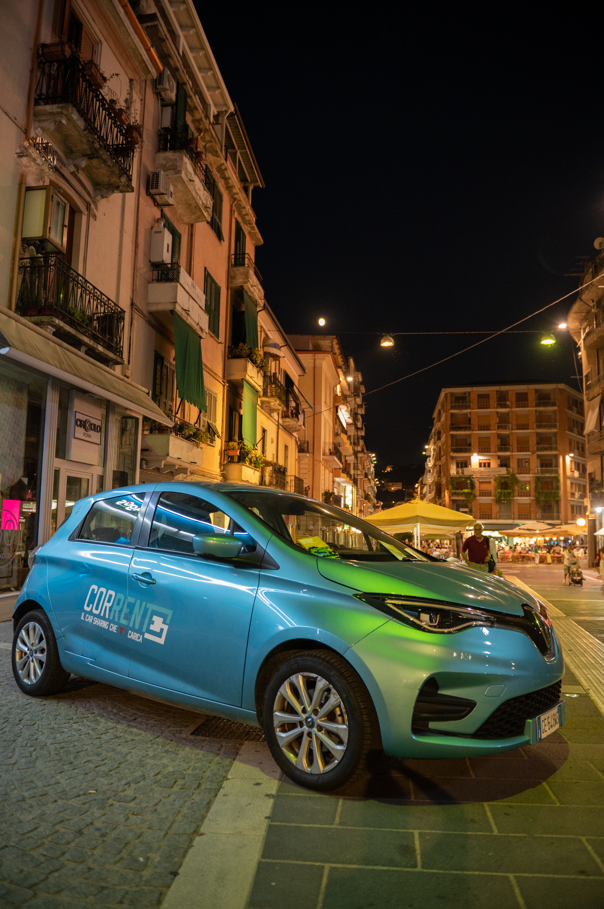
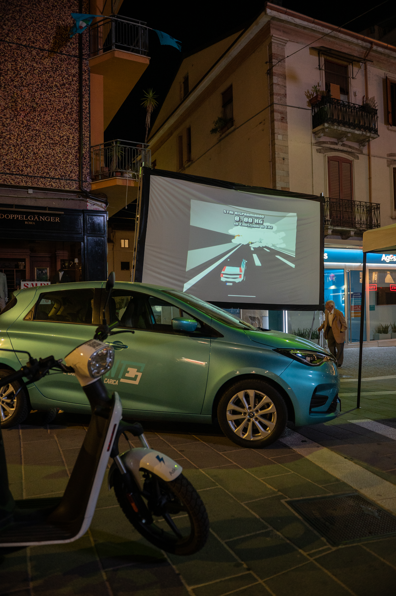
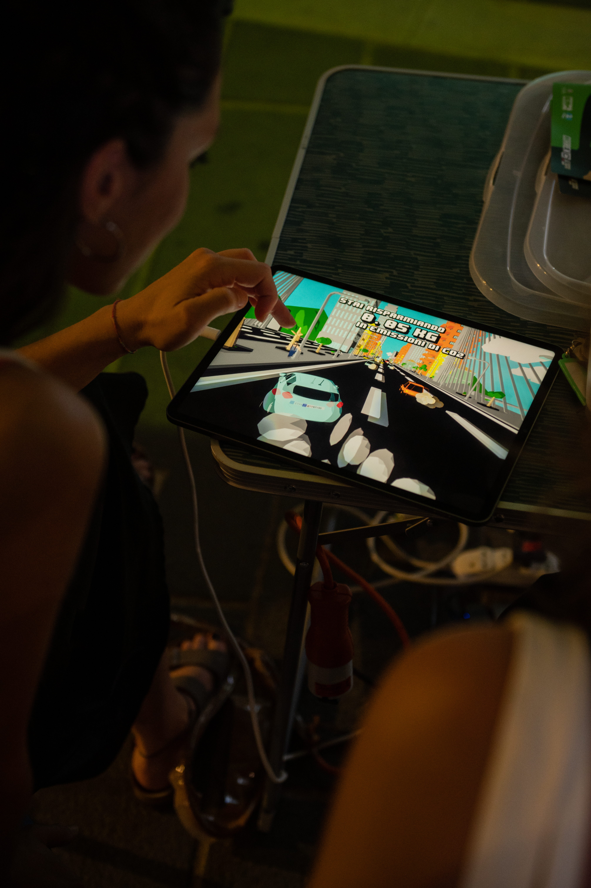
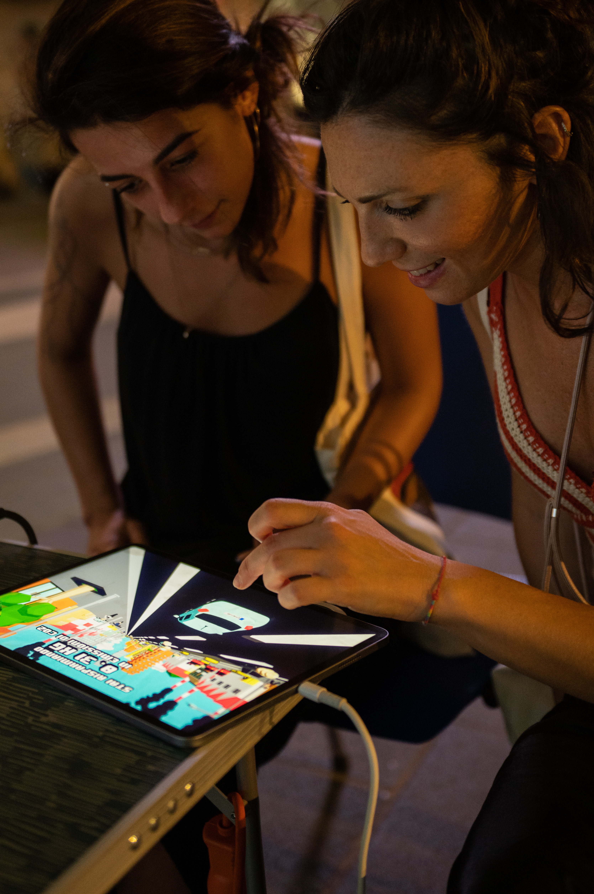
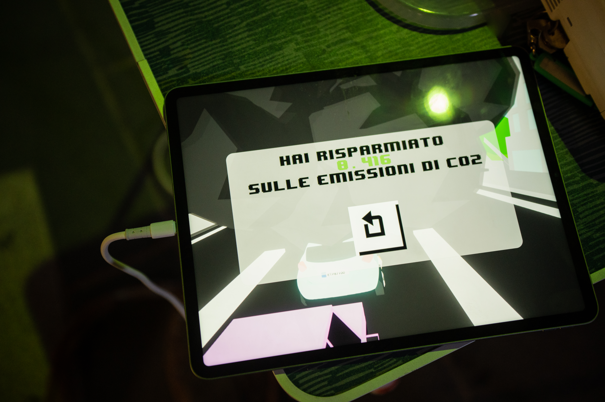
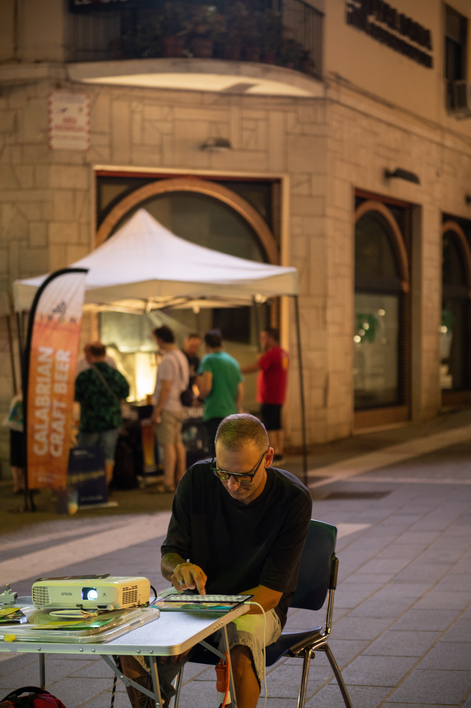
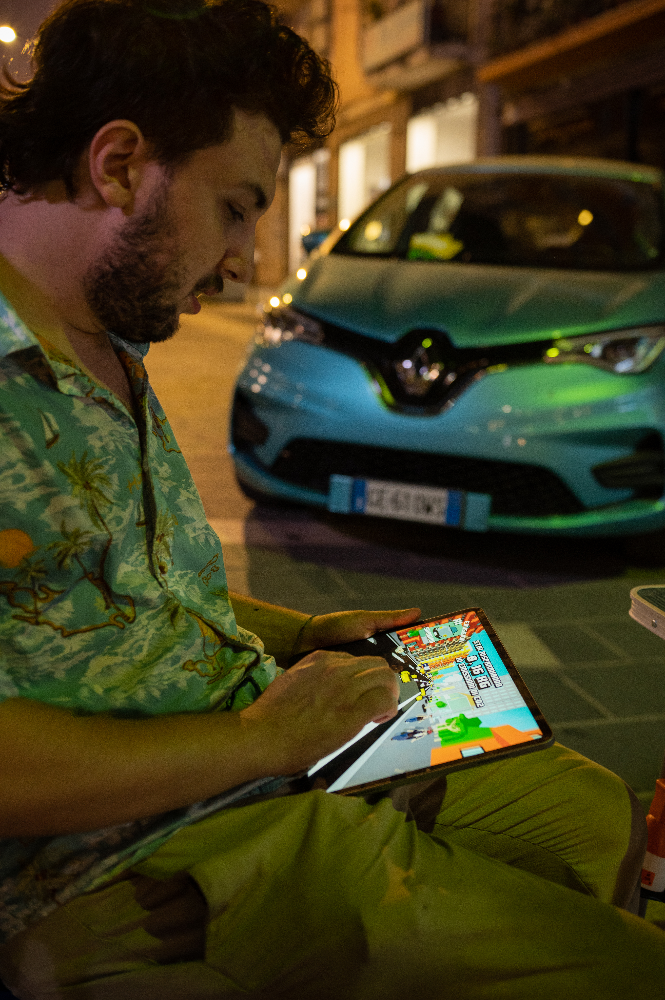
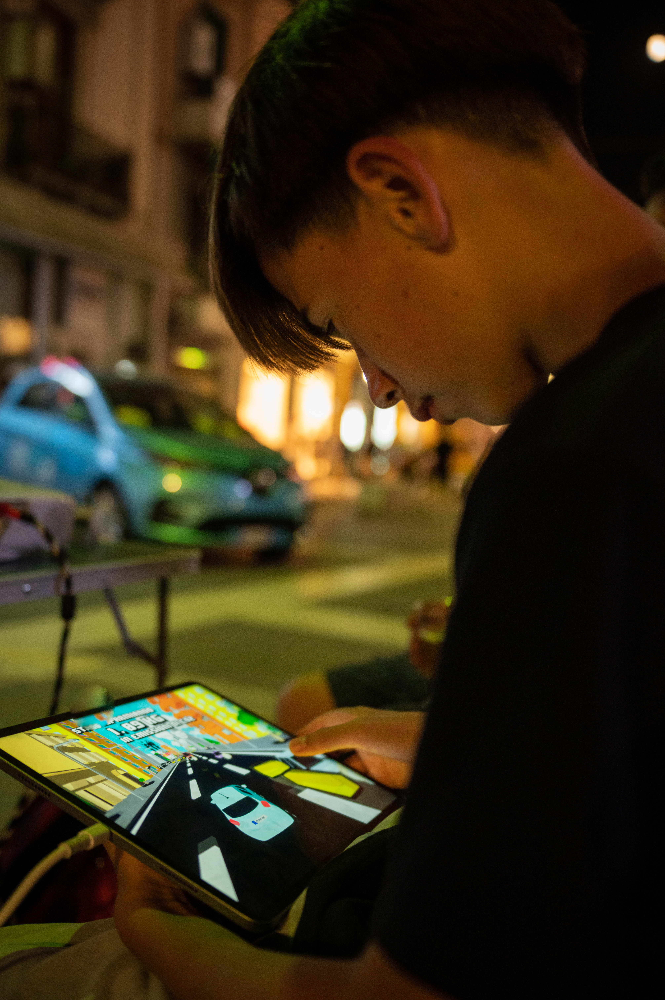
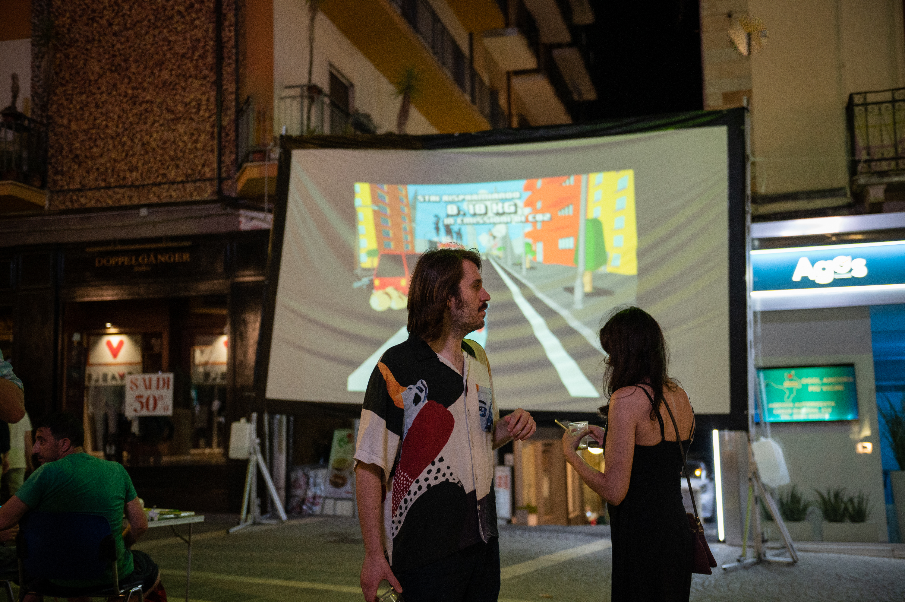

Description
GreenRoute is an innovative interactive game developed for the launch of a new car sharing service. The game is designed to educate and entertain users, promoting eco-friendly driving behaviors and raising awareness about the importance of sustainable mobility.
The project was developed in collaboration with two colleagues, focusing on creating an engaging and educational gaming experience to promote environmental sustainability and shared vehicle use.
Key Features
Driving Simulation
A realistic driving experience that replicates the dynamics of urban traffic, requiring players to navigate efficiently.
Points & Leaderboard System
A scoring system that rewards virtuous ecological performance, such as reducing CO2 emissions by carpooling, encouraging players to compete for the best "green" score.
Dynamic Graphics
Urban and non-urban settings that evolve visually: the environment becomes cleaner and more vibrant based on how much CO2 the player successfully saves.
Education & Entertainment
Beyond the fun of driving, the game serves as an effective marketing and educational tool for the benefits of car sharing.
Event & Demo
GreenRoute received positive feedback during its launch event. Below is a demo video showcasing the gameplay, followed by some photos from the event.








